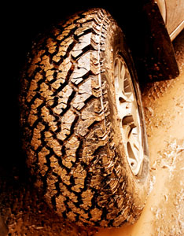

The phrase “fair chase” has a very specific meaning in the hunting world. The Boone and Crockett Club defines it as “the ethical, sportsmanlike and lawful pursuit and taking of any free-ranging, wild, native, North American, big-game animal in a manner that does not give the hunter an improper advantage over such animals.” This means fair-chase hunters pursue their quarry on foot; hone their skills so they make quick, clean kills; and they obey the law.
But today, this fair-chase ethic is under assault on many fronts.
Members of the Minnesota Backcountry Hunters and Anglers understand, as most sportsmen and sportswomen do, that healthy wildlife habitat, rivers and streams are the foundation supporting the American pastimes of hunting and fishing.
We believe there is a place for off-highway vehicle routes on public lands, but that greater controls and better enforcement are necessary in the face of growing human population and ever more powerful machines.
The Department of Natural Resources (DNR) has taken some initial steps to better manage ATV use on public lands in Minnesota by closing a limited number of motorized routes in the Cloquet Valley State Forest (and in other state forests) to protect wildlife habitat, wetlands and other sensitive areas, while leaving more than 80 percent of the forest’s routes open to motorized use (“ATV closures in Cloquet Valley State Forest confuse, anger some users,” Sept. 20). We applaud the DNR for closing these motorized routes.
“The presence of ATVs on public hunting grounds will probably be one of the largest contributors to loss of hunting opportunity that we’ve yet experienced,” Jim Posewitz, director of Orion: The Hunter’s Institute, explained in the summer 2008 issue of Forest Magazine. “It puts the animals at a disadvantage. It violates the security that wildlife once had in difficult terrain.”
Larry Fischer, co-founder of Traditional Bowhunter magazine, has noted that ATV abuse and overuse is crippling and demoralizing democratic hunting throughout America.
We at Minnesota Backcountry Hunters and Anglers are all for responsible access, but the 4,000 miles of U.S. Forest Service roads and 11,000-plus miles of state forest trails in Minnesota provide plenty of (in fact, far too much) motorized access. Studies show that, on most public lands, approximately 90 percent of users are non-motorized. Meanwhile, according to a 2000 study, supply or opportunity, in terms of lands available in Minnesota, is close to three times greater for motorized than for non-motorized.
Sadly, every time people hunt from ATVs and use high-tech goodies that violate fair chase, they give animal rights activists and the non-hunting public even more ammo to further restrict hunting, as Backcountry Hunters and Anglers founder and chairman Mike Beagle pointed out in the summer 2007 issue of Backcountry Journal.
Minnesota Deer Hunters Association Executive Director Mark Johnson once told the story of his Uncle Harvey and the day he recruited a “youngster” from church to accompany him opening weekend at the deer shack. The youngster got a doe and dragged it about a quarter mile out of the woods alone. “Did I mention,” Johnson said, “the youngster was 75 years old.”
The story reminded me of something American Hunter magazine contributor Sven Wigert once said: “If you are unable to figure out how to get an elk [or deer] out of the woods without putting it on a vehicle, then you have no business hunting for one.”
Hunting is more than a form of outdoor recreation. You don’t hear participants of other outdoors pursuits, even the most avid of participants, talking about our skiing heritage, boating heritage, bird-watching heritage, ATV-riding heritage or other heritages the way hunters talk about the hunting heritage. Our hunting heritage is separated from all other outdoor endeavors because hunting requires and imposes ethical standards on its participants.
But the increasing use of ATVs in hunting is making a mockery of such ethics.
|
 ISTOCKPHOTO ATV abuse and overuse endangers the health of wildlife habitats, rivers and streams - the very the foundation that supports the American pastimes of hunting and fishing. |
|
|